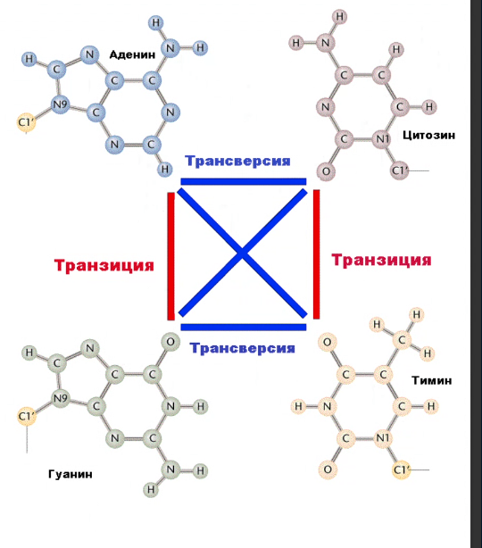
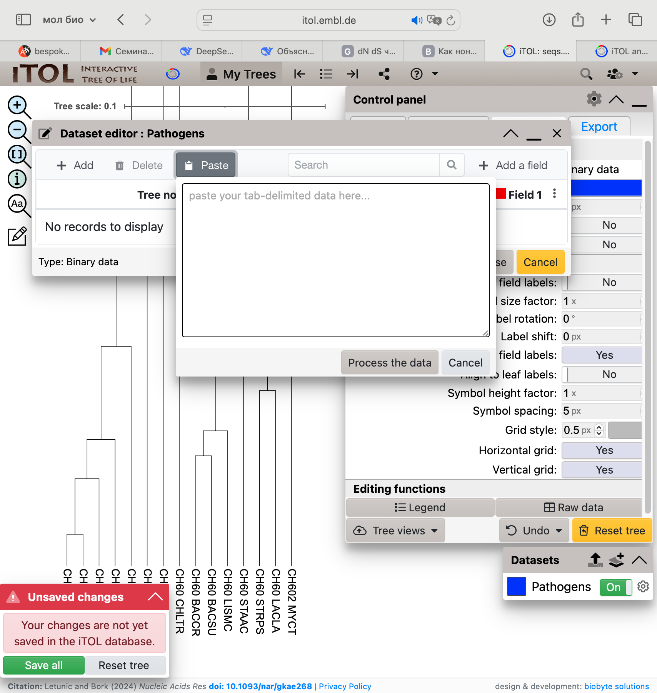
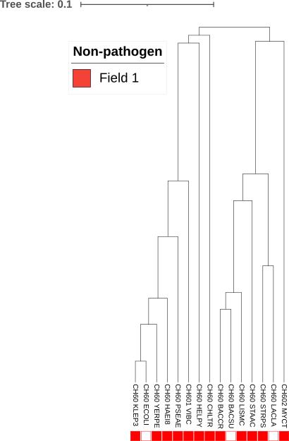

conda activate py3_study
conda install -c bioconda bmge -y
conda install -c bioconda -c conda-forge iqtree emboss phylip -y6 Филогенетические деревья
6.1 Типы деревьев
Укорененные/неукорененные (надо проверять, какое именно дерево строит программа - бывает, что она произвольно вставляет корень); ультраметрические/аддитивные
6.2 Базовые понятия
- Листья
- Внутренние узлы (это зачастую гипотетические предки)
- Корень (гипотетические прародитель всех)
- Ветви
- Клады (группы листьев, объединенные внутренним узлом)
6.3 Источники данных для построения деревьев
- Множественное выравнивание
- Матрица расстояний
- Дерево
6.3.1 Множественное выравнивание
- Последовательности должны быть родственными, ортологи
- Очистка (бывают вставки, которые стоит удалить)
6.3.2 Эволюционнные модели: ДНК
- Jukes-Cantor
- Все замены равновероятны
- Частоты нуклеотидов - тоже равные
- Испоользуется для коротких эволюционных расстояний (например подходит для вирусов)
- Kimura
- Различает транзиции и трансверсии
- Транзиции происходят чаще

- Hasegava-Kishino-Yano
- Для ML - филогенетики
- Как Кимура + учитываются неравные частоты нуклеотидов
- General Time Reversible
6.3.3 Эволюционнные модели: Белок
- PAM
- BLOSUM
- LG (стандарт в IQ-TREE, PhyLM, RAxML)
- Строится на огромном наборе белковых MSA
6.3.4 Матрица расстояний
Каждый элемент - эволюционная дистанция между двумя объектами
- Неотрицательность
- Симметричность
- \(d_{ii}\) = 0
6.3.4.1 Методы подсчета
- p-distance (proportion distance) \(d_{ij} = \frac{число~ различий}{общая~ длина ~сравнения}\)
- ML - посчитать t, при котором вероятность реализованного исхода наибольшая …
6.3.5 Построение дерева
6.3.5.1 Neighbor-Joining (NJ)
Метод ближайшего соседа
В начальной точке все последовательности равноудалены, алгоритм начинает с пары с минимальным расстоянием, к ней присоединяется следующая по минимальному расстоянию, строится неукорененное дерево (ведь мы начинаем с листьев)
Не требует равных скоростей эволюции
Топология дерево сильно зависит от того, откуда мы начнем его строить
6.3.5.2 Maximum Parsimony
Наиболее вероятным считается дерево, требующее минимального числа эволюционных изменений
L(T) - длина дерева T = argmin(L(T))
Есть несколько алгоритмов подсчета длин деревьев, без полного перебора
Предполагает одинаковую скорость эволюции
Строит неукорененное дерево
6.3.5.3 UPGMA (Unweight Pair Group Method with Arithmetic Mean)
Одинаковая скорость эволюции + есть корень -> строит укорененное, ультраметрическое дерево
6.3.5.4 Maximum Likelyhood
\(T^*,~ \theta^* = arg~ max L(T,\theta~|MSA )\)
Начальноу дерево -> Оценить длину дерева -> Есть улучшения? -> и тд
6.3.5.5 Сравнение всех методов

6.4 Форматы дереьев
- Newick (bootstrap - проверка дерева на устойчивость - если убрать лист - изменится ли топология клады) ((A:0.1,B:0.2)90:0.3,C:0.4)
- Nexus Begin tree; Tree T1 = ((A,B),C); End;
Основан на блоках кода - XML - based (PHYLOXML) - JSON-based (Nextstrain)
6.5 Визуализация
- iTOL
- Dendroscope
- Auspice (для эпидемиологического анализа)
- MEGA (хороша для обучения)
- UGEN
7 Практика филогенетические деревья
7.1 Устанваливаем пакеты bmge, iqtree, emboss, phylip
7.2 Строим множественное выравнивание
muscle -align Структуры_данных/03.12.25/seqs.fasta -output Структуры_данных/03.12.25/seqs.aln.fasta
muscle 5.3.osx64 [] 8.6Gb RAM, 4 cores
Built Jul 30 2025 21:35:18
(C) Copyright 2004-2021 Robert C. Edgar.
https://drive5.com
[align Структуры_данных/03.12.25/seqs.fasta]
Input: 15 seqs, avg length 543, max 548, min 530
00:00 2.3Mb 6.7% Derep 1 uniques, 0 dupes
00:00 2.3Mb 100.0% Derep 15 uniques, 0 dupes
00:00 2.4Mb CPU has 4 cores, running 4 threads
00:00 2.5Mb 0.95% Calc posteriors
00:01 78Mb 18.1% Calc posteriors
00:02 78Mb 48.6% Calc posteriors
00:03 90Mb 72.4% Calc posteriors
00:03 93Mb 100.0% Calc posteriors
00:04 85Mb 7.1% UPGMA5
00:04 85Mb 100.0% UPGMA5
00:04 85Mb 0.95% Consistency (1/2)
00:04 81Mb 100.0% Consistency (1/2)
00:04 81Mb 0.95% Consistency (2/2)
00:04 77Mb 100.0% Consistency (2/2)
00:04 44Mb 1.0% Refining
00:04 40Mb 100.0% RefiningСмотрим в UGENE и видим, что качество не очень высокое
 ## Чистим выравнивание от “плохих” позиций
## Чистим выравнивание от “плохих” позиций
BMGE -i Структуры_данных/03.12.25/seqs.aln.fasta -t AA -m BLOSUM30 -h 0.5 -of Структуры_данных/03.12.25/seqs.aln.trimmed.fasta Amino acid sequence alignment seqs.aln.fasta
before : 15 sequences / 557 characters
0.00%
17.95%
35.91%
53.86%
71.81%
89.77%
after : 15 sequences / 528 characters
after : 15 sequences / 528 charactersИ снова посмотрим в UGENE

Программа аккуратно вырезала неудачные участки выравнивания
7.3 Подсчет расстояний для NJ и UPGMA
7.3.1 FASTA -> PHYLIP + переименовываем
seqret -sequence Структуры_данных/03.12.25/seqs.aln.trimmed.fasta -outseq Структуры_данных/03.12.25/seqs.phy -osformat2 phylipRead and write (return) sequenceshead Структуры_данных/03.12.25/seqs.phy 15 528
CH60_HELPYAKEIKFSDSA RNLLFEGVRQ LHDAVKVTMG PRGRNVLIQK SYGAPSITKD
CH602_MYCTAKTIAYDEEA RRGLERGLNA LADAVKVTLG PKGRNVVLEK KWGAPTITND
CH60_BACCRAKDIKFSEEA RRSMLRGVDT LANAVKVTLG PKGRNVVLEK KFGSPLITND
CH60_STAACVKQLKFSEDA RQAMLRGVDQ LANAVKVTIG PKGRNVVLDK EFTAPLITND
CH60_STRPSSKEIKFSSDA RSAMVRGVDI LADTVKVTLG PKGRNVVLEK SFGSPLITND
CH60_LACLASKDIKFSSDA RTAMMRGIDI LADTVKTTLG PKGRNVVLEK SYGSPLITND
CH60_BACSUAKEIKFSEEA RRAMLRGVDA LADAVKVTLG PKGRNVVLEK KFGSPLITND
CH60_LISMCAKDIKFSEDA RRAMLRGVDQ LANAVKVTLG PKGRNVVLEK KFGSPLITND
CH60_CHLTRAKNIKYNEEA RKKIQKGVKT LAEAVKVTLG PKGRHVVIDK SFGSPQVTKDPHYLIP-программы по умолчанию читают файл “infile”
cp Структуры_данных/03.12.25/seqs.phy Структуры_данных/03.12.25/infile7.4 Запускаем protdist с настройками по умолчанию
cd Структуры_данных/03.12.25
protdist << EOF
Y
cd -[2J[H
[2J[H
Protein distance algorithm, version 3.697
Settings for this run:
P Use JTT, PMB, PAM, Kimura, categories model? Jones-Taylor-Thornton matrix
G Gamma distribution of rates among positions? No
C One category of substitution rates? Yes
W Use weights for positions? No
M Analyze multiple data sets? No
I Input sequences interleaved? Yes
0 Terminal type (IBM PC, ANSI)? ANSI
1 Print out the data at start of run No
2 Print indications of progress of run Yes
Are these settings correct? (type Y or the letter for one to change)
Computing distances:
CH60_HELPY
CH602_MYCT .
CH60_BACCR ..
CH60_STAAC ...
CH60_STRPS ....
CH60_LACLA .....
CH60_BACSU ......
CH60_LISMC .......
CH60_CHLTR ........
CH60_HAEI8 .........
CH60_YERPE ..........
CH60_PSEAE ...........
CH60_KLEP3 ............
CH60_ECOLI .............
CH601_VIBC ..............
Output written to file "outfile"
Done.7.5 Сохраняем матрицу расстояний в отдельный файл
mv Структуры_данных/03.12.25/outfile Структуры_данных/03.12.25/seqs.protdist7.6 NJ
Исходные данные для neighbor должны называться infile
cp Структуры_данных/03.12.25/seqs.protdist Структуры_данных/03.12.25/infilecd Структуры_данных/03.12.25
neighbor << EOF
Y
EOF
cd -[2J[H
[2J[H
Neighbor-Joining/UPGMA method version 3.697
Settings for this run:
N Neighbor-joining or UPGMA tree? Neighbor-joining
O Outgroup root? No, use as outgroup species 1
L Lower-triangular data matrix? No
R Upper-triangular data matrix? No
S Subreplicates? No
J Randomize input order of species? No. Use input order
M Analyze multiple data sets? No
0 Terminal type (IBM PC, ANSI, none)? ANSI
1 Print out the data at start of run No
2 Print indications of progress of run Yes
3 Print out tree Yes
4 Write out trees onto tree file? Yes
Y to accept these or type the letter for one to change
Cycle 12: species 5 ( 0.07431) joins species 6 ( 0.10047)
Cycle 11: species 3 ( 0.04841) joins species 7 ( 0.06128)
Cycle 10: node 3 ( 0.01101) joins species 8 ( 0.06874)
Cycle 9: node 3 ( 0.03094) joins species 4 ( 0.17307)
Cycle 8: node 3 ( 0.02608) joins node 5 ( 0.07966)
Cycle 7: species 2 ( 0.28475) joins node 3 ( 0.08306)
Cycle 6: node 2 ( 0.04067) joins species 9 ( 0.27342)
Cycle 5: species 1 ( 0.27015) joins node 2 ( 0.00408)
Cycle 4: node 1 ( 0.10595) joins species 12 ( 0.10272)
Cycle 3: node 1 ( 0.02055) joins species 15 ( 0.19322)
Cycle 2: species 13 ( 0.01787) joins species 14 ( 0.01368)
Cycle 1: node 1 ( 0.03829) joins species 10 ( 0.06501)
last cycle:
node 1 ( 0.01907) joins species 11 ( 0.04739) joins node 13 ( 0.02377)
Output written on file "outfile"
Tree written on file "outtree"
Done.
/Users/lidaflorenskaya/Documents/АлгБио/1_sem/1_sem_algbio_bookmv Структуры_данных/03.12.25/outtree Структуры_данных/03.12.25/seqs.NJ.tree
mv Структуры_данных/03.12.25/outfile Структуры_данных/03.12.25/seqs.NJ.logДерево в Newick-формате:
head Структуры_данных/03.12.25/seqs.NJ.tree(((CH602_MYCT:0.28475,((((CH60_BACCR:0.04841,CH60_BACSU:0.06128):0.01101,
CH60_LISMC:0.06874):0.03094,CH60_STAAC:0.17307):0.02608,
(CH60_STRPS:0.07431,CH60_LACLA:0.10047):0.07966):0.08306):0.04067,
CH60_CHLTR:0.27342):0.00408,(CH60_PSEAE:0.10272,(CH601_VIBC:0.19322,
(CH60_HAEI8:0.06501,(CH60_YERPE:0.04739,(CH60_KLEP3:0.01787,
CH60_ECOLI:0.01368):0.02377):0.01907):0.03829):0.02055):0.10595,CH60_HELPY:0.27015);Файл с простой визуализацией
head -50 Структуры_данных/03.12.25/seqs.NJ.log
15 Populations
Neighbor-Joining/UPGMA method version 3.697
Neighbor-joining method
Negative branch lengths allowed
+----------------CH602_MYCT
!
! +--CH60_BACCR
! +-2
+--6 +-3 +--CH60_BACSU
! ! ! !
! ! +-4 +---CH60_LISMC
! ! ! !
! +----5 +----------CH60_STAAC
+-7 !
! ! ! +----CH60_STRPS
! ! +---1
! ! +-----CH60_LACLA
! !
! +----------------CH60_CHLTR
!
! +------CH60_PSEAE
8-----9
! ! +----------CH601_VIBC
! +-10
! ! +---CH60_HAEI8
! +-12
! ! +--CH60_YERPE
! +-13
! ! +-CH60_KLEP3
! +-11
! +CH60_ECOLI
!
+---------------CH60_HELPY
remember: this is an unrooted tree!
Between And Length
------- --- ------
8 7 0.00408
7 6 0.04067
6 CH602_MYCT 0.28475
6 5 0.08306remember: this is an unrooted tree!
7.7 UPGMA
cd Структуры_данных/03.12.25
neighbor << EOF
N
Y
EOF
cd -[2J[H
[2J[H
Neighbor-Joining/UPGMA method version 3.697
Settings for this run:
N Neighbor-joining or UPGMA tree? Neighbor-joining
O Outgroup root? No, use as outgroup species 1
L Lower-triangular data matrix? No
R Upper-triangular data matrix? No
S Subreplicates? No
J Randomize input order of species? No. Use input order
M Analyze multiple data sets? No
0 Terminal type (IBM PC, ANSI, none)? ANSI
1 Print out the data at start of run No
2 Print indications of progress of run Yes
3 Print out tree Yes
4 Write out trees onto tree file? Yes
Y to accept these or type the letter for one to change
[2J[H
Neighbor-Joining/UPGMA method version 3.697
Settings for this run:
N Neighbor-joining or UPGMA tree? UPGMA
L Lower-triangular data matrix? No
R Upper-triangular data matrix? No
S Subreplicates? No
J Randomize input order of species? No. Use input order
M Analyze multiple data sets? No
0 Terminal type (IBM PC, ANSI, none)? ANSI
1 Print out the data at start of run No
2 Print indications of progress of run Yes
3 Print out tree Yes
4 Write out trees onto tree file? Yes
Y to accept these or type the letter for one to change
Cycle 14: species 13 ( 0.01578) joins species 14 ( 0.01578)
Cycle 13: species 11 ( 0.04347) joins node 13 ( 0.02770)
Cycle 12: species 3 ( 0.05484) joins species 7 ( 0.05484)
Cycle 11: species 10 ( 0.06301) joins node 11 ( 0.01954)
Cycle 10: node 3 ( 0.01245) joins species 8 ( 0.06730)
Cycle 9: species 5 ( 0.08739) joins species 6 ( 0.08739)
Cycle 8: node 10 ( 0.04638) joins species 12 ( 0.10939)
Cycle 7: node 3 ( 0.06915) joins species 4 ( 0.13645)
Cycle 6: node 10 ( 0.04185) joins species 15 ( 0.15124)
Cycle 5: node 3 ( 0.02019) joins node 5 ( 0.06925)
Cycle 4: species 1 ( 0.25482) joins node 10 ( 0.10358)
Cycle 3: species 2 ( 0.25603) joins node 3 ( 0.09939)
Cycle 2: node 1 ( 0.00586) joins species 9 ( 0.26068)
Cycle 1: node 1 ( 0.00595) joins node 2 ( 0.01060)
Output written on file "outfile"
Tree written on file "outtree"
Done.
/Users/lidaflorenskaya/Documents/АлгБио/1_sem/1_sem_algbio_bookmv Структуры_данных/03.12.25/outtree Структуры_данных/03.12.25/seqs.UPGMA.tree
mv Структуры_данных/03.12.25/outfile Структуры_данных/03.12.25/seqs.UPGMA.loghead -50 Структуры_данных/03.12.25/seqs.UPGMA.log
15 Populations
Neighbor-Joining/UPGMA method version 3.697
UPGMA method
Negative branch lengths allowed
+--------------CH60_HELPY
!
! +---CH60_HAEI8
! +--4
+-11 ! ! +--CH60_YERPE
! ! ! +-2
! ! +-7 ! +CH60_KLEP3
! ! ! ! +-1
! ! ! ! +CH60_ECOLI
+-13 +-----9 !
! ! ! +------CH60_PSEAE
! ! !
! ! +--------CH601_VIBC
! !
-14 +---------------CH60_CHLTR
!
! +--------------CH602_MYCT
! !
! ! +--CH60_BACCR
! ! +-3
+-12 +---5 +--CH60_BACSU
! ! !
! +-8 +---CH60_LISMC
! ! !
+----10 +-------CH60_STAAC
!
! +----CH60_STRPS
+---6
+----CH60_LACLA
From To Length Height
---- -- ------ ------
14 13 0.00595 0.00595
13 11 0.00586 0.01181
11 CH60_HELPY 0.25482 0.26663
11 9 0.10358 0.11538
9 7 0.04185 0.15724
7 4 0.04638 0.20362Можем сравнить деревья в Sublime Text

head Структуры_данных/03.12.25/seqs.UPGMA.tree(((CH60_HELPY:0.25482,(((CH60_HAEI8:0.06301,(CH60_YERPE:0.04347,
(CH60_KLEP3:0.01578,CH60_ECOLI:0.01578):0.02770):0.01954):0.04638,
CH60_PSEAE:0.10939):0.04185,CH601_VIBC:0.15124):0.10358):0.00586,
CH60_CHLTR:0.26068):0.00595,(CH602_MYCT:0.25603,((((CH60_BACCR:0.05484,
CH60_BACSU:0.05484):0.01245,CH60_LISMC:0.06730):0.06915,
CH60_STAAC:0.13645):0.02019,(CH60_STRPS:0.08739,CH60_LACLA:0.08739):0.06925):0.09939):0.01060);7.8 ML
iqtree -s Структуры_данных/03.12.25/seqs.aln.trimmed.fasta --seqtype AA -m MFP -bb 1000 -nt AUTONEWICK
head Структуры_данных/03.12.25/seqs.aln.trimmed.fasta.treefile(CH60_HELPY:0.3898588752,(CH602_MYCTU:0.3912167735,(((CH60_BACCR:0.0803259504,CH60_BACSU:0.0493609255)68:0.0280073589,CH60_LISMC:0.0756762233)58:0.0341075748,(CH60_STAAC:0.2126168178,(CH60_STRPS:0.0734405241,CH60_LACLA:0.1349756976)100:0.1553805108)82:0.0348490400)100:0.1682327665)99:0.1208257866,(CH60_CHLTR:0.4156398474,(((CH60_HAEI8:0.0772703352,(CH60_YERPE:0.0525477043,(CH60_KLEP3:0.0269603591,CH60_ECOLI:0.0083411322)86:0.0344113677)83:0.0362044668)91:0.0439997970,CH601_VIBC3:0.2702593075)92:0.0538020845,CH60_PSEAE:0.1392840272)100:0.1665632925)41:0.0224134680);NEXUS
head -50 Структуры_данных/03.12.25/seqs.aln.trimmed.fasta.splits.nex#nexus
BEGIN Taxa;
DIMENSIONS ntax=15;
TAXLABELS
[1] 'CH60_HELPY'
[2] 'CH602_MYCTU'
[3] 'CH60_BACCR'
[4] 'CH60_STAAC'
[5] 'CH60_STRPS'
[6] 'CH60_LACLA'
[7] 'CH60_BACSU'
[8] 'CH60_LISMC'
[9] 'CH60_CHLTR'
[10] 'CH60_HAEI8'
[11] 'CH60_YERPE'
[12] 'CH60_PSEAE'
[13] 'CH60_KLEP3'
[14] 'CH60_ECOLI'
[15] 'CH601_VIBC3'
;
END; [Taxa]
BEGIN Splits;
DIMENSIONS ntax=15 nsplits=63;
FORMAT labels=no weights=yes confidences=no intervals=no;
MATRIX
100 2,
100 3,
100 7,
68 3 7,
100 8,
58 3 7 8,
100 4,
100 5,
100 6,
100 5 6,
82 4 5 6,
100 3 4 5 6 7 8,
99 2 3 4 5 6 7 8,
100 10,
100 11,
12 10 11,
100 13,
100 14,
86 13 14,
91 10 11 13 14,
100 15,
92 10 11 13 14 15,
100 12,Лучшее и консенсуснное дерево:
tail -150 Структуры_данных/03.12.25/seqs.aln.trimmed.fasta.iqtreeMTVER+G4 -8099.182 16254.365 - 5.42e-294 16257.619 - 7.71e-294 16373.900 - 3.39e-293
MTVER+I+G4 -8099.449 16256.898 - 1.53e-294 16260.392 - 1.93e-294 16380.701 - 1.13e-294
HIVW+G4 -8123.422 16302.844 - 1.61e-304 16306.099 - 2.29e-304 16422.379 - 1.01e-303
HIVW+I+G4 -8121.712 16301.425 - 3.27e-304 16304.919 - 4.13e-304 16425.228 - 2.43e-304
MTMAM+G4 -8194.676 16445.351 - 0 16448.606 - 0 16564.886 - 0
MTMAM+I+G4 -8195.056 16448.113 - 0 16451.607 - 0 16571.917 - 0
AIC, w-AIC : Akaike information criterion scores and weights.
AICc, w-AICc : Corrected AIC scores and weights.
BIC, w-BIC : Bayesian information criterion scores and weights.
Plus signs denote the 95% confidence sets.
Minus signs denote significant exclusion.
SUBSTITUTION PROCESS
--------------------
Model of substitution: LG+G4
State frequencies: (model)
Model of rate heterogeneity: Gamma with 4 categories
Gamma shape alpha: 0.7552
Category Relative_rate Proportion
1 0.0860 0.2500
2 0.3884 0.2500
3 0.9437 0.2500
4 2.5819 0.2500
Relative rates are computed as MEAN of the portion of the Gamma distribution falling in the category.
MAXIMUM LIKELIHOOD TREE
-----------------------
Log-likelihood of the tree: -7425.8244 (s.e. 223.0207)
Unconstrained log-likelihood (without tree): -2897.0082
Number of free parameters (#branches + #model parameters): 28
Akaike information criterion (AIC) score: 14907.6488
Corrected Akaike information criterion (AICc) score: 14910.9033
Bayesian information criterion (BIC) score: 15027.1835
Total tree length (sum of branch lengths): 3.2966
Sum of internal branch lengths: 0.8988 (27.2646% of tree length)
NOTE: Tree is UNROOTED although outgroup taxon 'CH60_HELPY' is drawn at root
Numbers in parentheses are ultrafast bootstrap support (%)
+-------------------------------------CH60_HELPY
|
| +-------------------------------------CH602_MYCTU
+----------| (99)
| | +------CH60_BACCR
| | +--| (68)
| | | +---CH60_BACSU
| | +--| (58)
| | | +------CH60_LISMC
| +---------------| (100)
| | +-------------------CH60_STAAC
| +--| (82)
| | +------CH60_STRPS
| +--------------| (100)
| +------------CH60_LACLA
|
| +---------------------------------------CH60_CHLTR
+--| (41)
| +------CH60_HAEI8
| +---| (91)
| | | +----CH60_YERPE
| | +--| (83)
| | | +--CH60_KLEP3
| | +--| (86)
| | +--CH60_ECOLI
| +----| (92)
| | +-------------------------CH601_VIBC3
+---------------| (100)
+------------CH60_PSEAE
Tree in newick format:
(CH60_HELPY:0.3898588752,(CH602_MYCTU:0.3912167735,(((CH60_BACCR:0.0803259504,CH60_BACSU:0.0493609255)68:0.0280073589,CH60_LISMC:0.0756762233)58:0.0341075748,(CH60_STAAC:0.2126168178,(CH60_STRPS:0.0734405241,CH60_LACLA:0.1349756976)100:0.1553805108)82:0.0348490400)100:0.1682327665)99:0.1208257866,(CH60_CHLTR:0.4156398474,(((CH60_HAEI8:0.0772703352,(CH60_YERPE:0.0525477043,(CH60_KLEP3:0.0269603591,CH60_ECOLI:0.0083411322)86:0.0344113677)83:0.0362044668)91:0.0439997970,CH601_VIBC3:0.2702593075)92:0.0538020845,CH60_PSEAE:0.1392840272)100:0.1665632925)41:0.0224134680);
CONSENSUS TREE
--------------
Consensus tree is constructed from 1000 bootstrap trees
Log-likelihood of consensus tree: -7425.824432
Robinson-Foulds distance between ML tree and consensus tree: 0
Branches with support >0.000000% are kept (extended consensus)
Branch lengths are optimized by maximum likelihood on original alignment
Numbers in parentheses are bootstrap supports (%)
+-------------------------------------CH60_HELPY
|
| +-------------------------------------CH602_MYCTU
+----------| (99)
| | +------CH60_BACCR
| | +--| (68)
| | | +---CH60_BACSU
| | +--| (58)
| | | +------CH60_LISMC
| +---------------| (100)
| | +-------------------CH60_STAAC
| +--| (82)
| | +------CH60_STRPS
| +--------------| (100)
| +------------CH60_LACLA
|
| +---------------------------------------CH60_CHLTR
+--| (41)
| +------CH60_HAEI8
| +---| (91)
| | | +----CH60_YERPE
| | +--| (83)
| | | +--CH60_KLEP3
| | +--| (86)
| | +--CH60_ECOLI
| +----| (92)
| | +-------------------------CH601_VIBC3
+---------------| (100)
+------------CH60_PSEAE
Consensus tree in newick format:
(CH60_HELPY:0.3900429813,(CH602_MYCTU:0.3913628883,(((CH60_BACCR:0.0803449626,CH60_BACSU:0.0493723422)68:0.0280140029,CH60_LISMC:0.0756906607)58:0.0341163749,(CH60_STAAC:0.2126878772,(CH60_STRPS:0.0734430703,CH60_LACLA:0.1350221404)100:0.1554341766)82:0.0348420396)100:0.1682942628)99:0.1208632629,(CH60_CHLTR:0.4158742269,(((CH60_HAEI8:0.0773304222,(CH60_YERPE:0.0525875244,(CH60_KLEP3:0.0269855533,CH60_ECOLI:0.0083337849)86:0.0344200356)83:0.0362120560)91:0.0440012661,CH601_VIBC3:0.2704394219)92:0.0537962760,CH60_PSEAE:0.1393833227)100:0.1666421487)41:0.0224015782);
ALISIM COMMAND
--------------
To simulate an alignment of the same length as the original alignment, using the tree and model parameters estimated from this analysis, you can use the following command:
--alisim simulated_MSA -t 03.12.25/seqs.aln.trimmed.fasta.treefile -m "LG+G4{0.755158}" --length 528
To mimic the alignment used to produce this analysis, i.e. simulate an alignment of the same length as the original alignment, using the tree and model parameters estimated from this analysis *and* copying the same gap positions as the original alignment, you can use the following command:
iqtree -s 03.12.25/seqs.aln.trimmed.fasta --alisim mimicked_MSA
To simulate any number of alignments in either of the two commandlines above, use the --num-alignments options, for example mimic 100 alignments you would use the command line:
iqtree -s 03.12.25/seqs.aln.trimmed.fasta --alisim mimicked_MSA --num-alignments 100
For more information on using AliSim, please visit: www.iqtree.org/doc/AliSim
TIME STAMP
----------
Date and time: Wed Dec 3 11:09:13 2025
Total CPU time used: 56.419625 seconds (0h:0m:56s)
Total wall-clock time used: 63.62741709 seconds (0h:1m:3s)Появились bootstrepы
conda deactivate
7.9 Визуализация на сайте Itools
Можем добавить метаданные - нужно создать новый датасет и вручную вставить данные из файла с метаданными, например
0 - не патоген, 1 - патоген.
head Структуры_данных/03.12.25/path.txtCH60_ECOLI 0
CH60_PSEAE 1
CH601_VIBC 1
CH60_YERPE 1
CH60_KLEP3 1
CH60_HAEI8 1
CH60_CHLTR 1
CH60_BACSU 0
CH60_BACCR 1
CH60_LISMC 1
